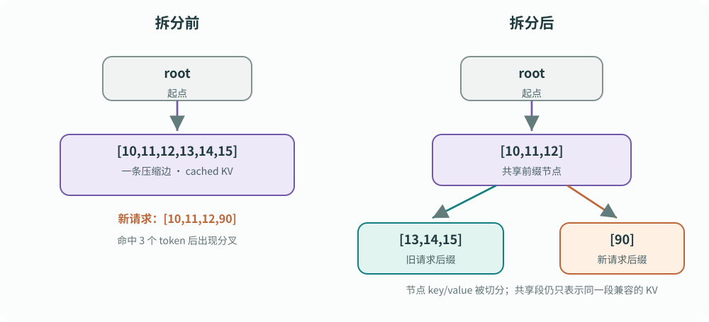
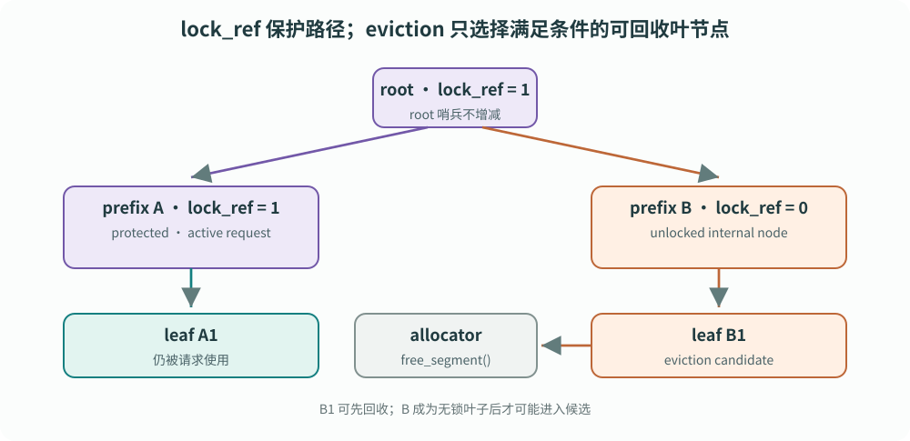

第 07 章 · 缓存内部
RadixCache 源码拆解：匹配、边拆分、锁引用与淘汰
把 Radix Tree 看成一个管理 KV 片段引用的索引结构，而不是另一套物理内存分配器。
RadixCache 的价值不只在于“两个 prompt 有共同前缀”。真正困难的是：压缩边中途发生分叉怎么办？一个请求正在使用某个 prefix 时，淘汰器能不能删掉它？一个节点从树中移除后，哪一段物理 KV 可以归还？当前实现通过 RadixKey、TreeNode、lock_ref、evictable leaves 与底层 allocator 把这些问题分开处理。
读完本章，你应该能
- 沿 match_prefix 理解最长前缀匹配和 page alignment。
- 解释部分匹配为何需要 _split_node，以及 value index 如何切分。
- 理解 inc_lock_ref/dec_lock_ref 如何改变 protected/evictable 计数。
- 解释 eviction 从可回收叶节点开始，并调用 allocator 释放 KV segment。
1. 查找的 key 不只是可见 Prompt 字符串
RadixKey 表示可匹配的 token 序列及相关 namespace 信息。当前实现还考虑 extra_key 等额外区分条件；match_prefix() 会将 key 转为当前 cache 需要的视图，并按 page_size 对齐。对于 EAGLE 路径，key 还可能转换为 bigram view。
因此，两个用户看到的文本相同，不足以证明其 KV 一定兼容。模型、tokenizer、adapter/LoRA、额外上下文和 cache namespace 都可能影响能否共享。extra_key 这种机制是缓存命名空间的一部分，不应被当成完整的租户安全边界。
2. match_prefix：沿压缩边查找最长匹配
RadixCache.match_prefix() 先处理 key 视图和 page alignment，再调用递归/迭代辅助路径 _match_prefix_helper。辅助函数沿着 child key 查找，更新 access metadata；若匹配止于一条更长压缩边中间（请求结束或分叉），则把旧边拆开，让“命中到哪里”为树中一个明确节点。
这只是普通 token key 的简化对齐模型；源码还包含 bigram view、额外 key 和缓存状态处理，不能只凭公式复刻全部匹配逻辑。

3. _split_node：切开的是树边与 slot 索引片段
当前 _split_node() 新建一个共享前缀节点，让原 child 成为它的后继；新节点继承优先级、hit count 和 lock_ref，key 与 value 分别切成前段和后段。这里的 value 是 KV 位置索引张量；切片/clone 的是索引元数据，并不意味着把底层每层 K/V 内容重新计算或复制一份。
这个细节很关键：树结构变得更精确，物理 KV 仍然由 pool 管理。若把“树节点拆分”画成“复制 K/V buffer”，就会误解其内存成本。
4. lock_ref：保护从节点到 root 的整条路径
inc_lock_ref() 从目标节点沿祖先路径逐层增加引用数，循环条件 node != self.root_node，不修改 root 哨兵。当某节点从 0 变为 1，节点 key 对应的长度会从 evictable_size 转移到 protected_size；dec_lock_ref() 在引用从 1 降为 0 时执行反向转移。
为什么要沿祖先路径锁？因为一个叶节点仍被请求引用时，它的祖先路径也必须保持结构完整。节点是否是叶子、是否有 lock_ref、是否处于 evictable leaves 集合，会共同决定它能否被驱逐。

5. eviction：从 evictable leaf 释放 KV segment
evict() 从当前 evictable_leaves 构建候选堆，依据配置的 eviction_strategy 计算优先级。选中节点后，调用 token_to_kv_pool_allocator.free_segment() 释放对应 page-aligned KV 段，再删除叶节点；若父节点因此变成没有有效孩子且未被锁定的叶子，它也可能成为新的候选。
因此不能把 eviction 简化为“永远 LRU”。节点有 access timestamp、hit_count、priority，实际候选顺序由当前 eviction strategy 决定。更不能直接删掉任意中间节点：树路径与 lock_ref 必须保持一致。
6. 从一次 cache hit 追到真正的 allocator
建议按以下调用顺序阅读当前版本：
RadixCache.match_prefix(params)
-> key.page_aligned(page_size)
-> _match_prefix_helper(root, key)
-> compare child.key
-> _split_node(...) when match ends mid-edge
-> MatchResult(device_prefix_len, last_device_node, last_host_node, best_match_node)
request starts using prefix:
-> inc_lock_ref(last_node) # protect path
request releases prefix:
-> dec_lock_ref(last_node) # restore evictability
memory pressure:
-> evict(evictable leaf)
-> allocator.free_segment(node.value, ...)真实请求还可能经过 host cache、HiCache、priority eviction 和模型特定缓存状态；上面是帮助建立核心对象关系的阅读路线，不是完整调用栈。
7. 交互：同一条边经历四个阶段
通过状态切换，观察树结构与内存可回收状态分别如何变化。
RadixCache 节点生命周期
Prefix match：新请求匹配到共享路径；如果终点位于压缩边内部，需要先 split 出精确的终止节点。
Lock path：请求持有命中前缀，目标节点到 root 之前的节点 lock_ref 增加；相关长度从 evictable 转入 protected。
Release lock：请求完成后 dec_lock_ref；当节点引用归零且结构允许时，它重新进入可回收集合。
Evict leaf：策略从 evictable leaves 选择候选，删除树叶并调用 allocator.free_segment 释放页段。
8. 容易混淆的边界
第一，RadixCache 是前缀索引与缓存生命周期管理，不是 attention kernel。第二，TreeNode.value 保存的是 KV 位置索引，而不是 K/V 内容本身。第三，page alignment 会影响可命中的 token 边界。第四，锁引用与 eviction priority 是两个不同概念：未锁定不等于一定立即淘汰，锁定则意味着不能按普通空闲叶路径释放。
当前源码还支持不同 key view、额外 namespace 和多种 cache 策略。理解本章后，再回到 KV Pool 章节看 free_segment 如何把树中的索引转换为物理页回收，才构成完整闭环。
参考资料与版本边界
实现级描述以 sgl-project/sglang@6a4e10a0ee643dfbe5f59a98b60293bc11fc1bdd 为快照（2026-11-23 核查）。源码 main 后续会变化；新版本需要重新核对调用路径、默认配置和兼容矩阵。图中页号、chunk 数值和概率向量均为 toy/derived，不是性能测量。